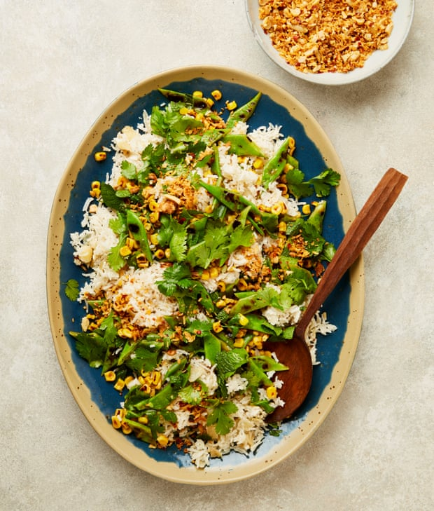

Coconut rice with peanut crunch

This is a great side dish to go alongside your protein of choice. The peanut crunch is super-special and will make more than you need here; store the excess in an airtight jar and use for sprinkling over salads and fruit. If you’re left with just a bit of coconut milk in a tin, after using what the recipe calls for, a neat trick is to freeze the rest in a compartment or two of an ice-cube tray – this means it won’t go to waste and will be at the ready whenever you need just a bit in the future.
For the topping
Put the coconut oil, onions, lime leaves and half a teaspoon of salt in a large saute pan for which you have a lid. Put the pan on a medium-high heat, and cook, stirring often, for 10 minutes, until the onions are translucent and lightly coloured. Stir in the desiccated coconut, cook for another three to five minutes, until lightly browned, then stir in the rice. Pour in the coconut milk and 200ml water, cover the pan, turn the heat down low and cook gently for 15 minutes. Take off the heat, leaving the lid on, and set aside for 15 minutes. When ready, lift off the lid, fluff the rice with a fork and leave to cool slightly.
Meanwhile, make the topping. Melt the coconut oil in a large frying pan on a medium heat. Add the chilli flakes, peanuts and coconut, and cook, stirring frequently, for four to six minutes, until toasted and fragrant. Off the heat, stir in the fried onions, brown sugar and half a teaspoon of salt, stir to combine, then tip on to a tray and leave to cool. Once cool, transfer to a food processor, pulse three to five times, until the peanuts are roughly broken, then tip into a bowl and set aside.
Wipe the frying pan clean and put it on a high heat. Once the pan is smoking hot, add the sweetcorn and cook, stirring, for three to five minutes, until the kernels are popping and slightly charred. Tip into a bowl and return the pan to the heat. Drizzle the beans with the remaining teaspoon of coconut oil, then drop into the pan. Use tongs or a smaller pan to press them flat, and char for about two minutes a side. Transfer to a board and, once cooled slightly, cut the beans at an angle into 1½cm-thick slices. Add these to the sweetcorn bowl, then stir in the lime juice, olive oil, herbs and a quarter-teaspoon of salt.
Arrange the rice and charred vegetable mixture in alternating layers on a platter, sprinkle over a third of the topping and serve with the rest in a bowl alongside.